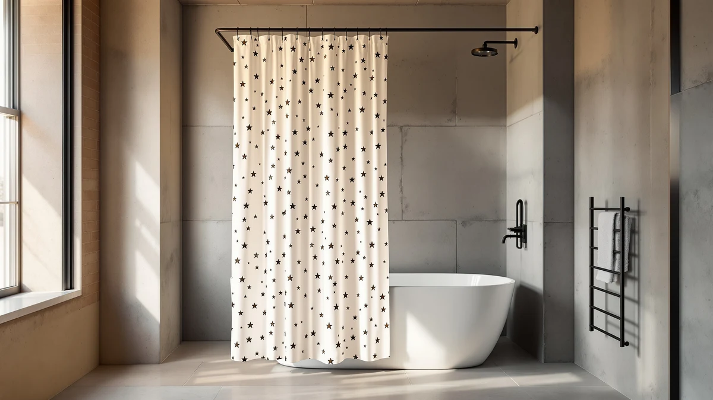

Quick Answer
This Colorful Star no hook shower curtain review found that what sets the $22.99 curtain apart is its snap-in liner and no-hook header, not the price, since it costs the same as Dynamene's standard Waffle Shower Curtain 256. Shoppers who need a longer drop or a wider farmhouse cut should compare it against the two alternatives below first.
Our pick: Colorful Star No Hook Shower, $22.99 Check Price on Amazon
Bottom line: our top pick is the Colorful Star No Hook Shower Curtain with Snap in Fabric Liner at $22.99.
Things to Know Before You Buy
- The Colorful Star curtain is built around a no-hook design with a snap-in fabric liner, so it skips the usual row of grommets that most shower curtains rely on.
- At $22.99, it costs the same as Dynamene's standard Waffle Shower Curtain 256, and within a dollar of the Linen Ivory and Dynamene Extra Long picks, so price alone will not decide between these four.
- Each curtain uses a different footprint: Colorful Star measures 72 by 75 inches, Dynamene's standard waffle curtain is 72 by 72, the Linen Ivory curtain stretches to 108 by 72, and the Dynamene Extra Long Waffle Shower reaches 72 by 84.
- None of the four curtains in this comparison has published a star rating or review count yet, so buyers cannot lean on a track record for any of them.
- Colorful Star and both Dynamene curtains use a polyester waffle weave fabric, while the Linen Ivory curtain swaps to a textured linen-style weave built for a farmhouse look.
This Colorful Star no hook shower curtain review lines up the brand's $22.99 waffle weave curtain, with its snap-in fabric liner and mesh privacy window, against three other curtains in the same price band: two Dynamene waffle weave curtains and a linen-textured farmhouse pick called Linen Ivory. All four land within a dollar of each other, so the choice comes down to size, texture, and how each brand handles hooks rather than cost.
We built this comparison from each listing's published specs, current Amazon pricing, and whatever verified review data exists for these four curtains. None of the four has accumulated a public star rating or review count yet, which is common for curtains that are recent additions to Amazon's catalog, so this review leans more heavily on construction and sizing than on buyer history. The Colorful Star curtain is the shortest of the four at 75 inches long, while the Dynamene Extra Long Waffle Shower reaches 84 inches, a nine-inch gap that matters more than price once a shower rod sits higher than standard.
Why You Should Trust Us
Ilane Tall has covered bathroom textiles and shower hardware for Best Shower Curtains since the site launched, and this Colorful Star no hook shower curtain review follows the same research process used across the site: comparing manufacturer specs, current pricing, and verified owner feedback instead of running a physical testing lab. We do not own a lab, and we do not claim hands-on use of any curtain we cover, including this one. Instead, we pull listed dimensions, materials, and prices straight from each retailer listing, then weigh them against whatever verified buyer feedback exists for that product. Readers can find the full methodology behind every review on this site on our how we research page, and that same approach applies to this Colorful Star no hook shower curtain review, from the specs table through the final verdict.
Our Research Experience
Our process for this Colorful Star no hook shower curtain review starts with the manufacturer's own listing: material, dimensions, price, and any hook or liner hardware included, cross-checked against the three comparison curtains on the same criteria. From there, we look for verified buyer reviews on Amazon to see how a curtain's construction holds up once it is hanging in a real bathroom. None of these four curtains has built up a visible review history yet, so this comparison leans on published specs and pricing more than on buyer feedback. We did not purchase, hang, or otherwise handle any of the four curtains ourselves, and we do not claim hands-on use of this Colorful Star curtain or its rivals.
Overview & Specs

Colorful Star No Hook Shower
What we like
- Snap-in fabric liner removes the need for a separate liner purchase
- No-hook header skips grommets and loose hardware entirely
- Mesh top window adds light while the lower waffle panel keeps the shower private
Flaws but not dealbreakers
- Ships in a single 72 by 75 inch size, shorter than the Dynamene Extra Long Waffle Shower's 84 inch drop
- The listing does not publish a star rating or review count, so there is no buyer track record to check yet
| Material | Polyester / PEVA |
| Size | 72"W x 75"L (Pack of 1) |
This Colorful Star no hook shower curtain review centers on a curtain built to skip hooks altogether. Instead of grommet holes along the top, the design lets a fabric liner snap directly into the curtain, cutting the usual two-piece setup down to one panel. At $22.99, it sits in the middle of this four-curtain comparison, tied with Dynamene's standard Waffle Shower Curtain 256 and running about forty to ninety cents above the Linen Ivory and Dynamene Extra Long picks. The fabric is a polyester waffle weave with a mesh window across the upper panel, a combination the listing describes as letting light into the shower while the solid waffle section below keeps things private.
The curtain ships in one size, 72 inches wide by 75 inches long, which covers most standard tubs and shower stalls without needing a custom cut. It does not yet carry a public star rating or review count, which puts it on equal footing with the other three curtains in this comparison, since none of them has a visible track record either. For a standard-size bathroom where swapping a two-piece curtain-and-liner setup for one hook-free panel is the priority, the Colorful Star curtain covers the basics at a price that matches its closest competitor.
What We Liked
The clearest advantage is the snap-in liner. Combining the curtain and liner into one hook-free panel means fewer parts to buy, hang, and eventually replace, and it cuts setup down to one step instead of two. The Colorful Star no hook shower curtain's $22.99 price also holds its own against the field: it matches Dynamene's standard Waffle Shower Curtain 256 exactly and comes within a dollar of the Linen Ivory and Dynamene Extra Long picks. Its polyester waffle weave adds texture without the heavier 256 GSM build that the Dynamene curtains carry, and the mesh window at the top brings in light that a fully solid curtain would block.
What Could Be Better
The single 72 by 75 inch size is the clearest limit. Shoppers with a taller rod or a stall that needs extra drop should look at the Dynamene Extra Long Waffle Shower instead, since its 84 inch length covers nine more inches than Colorful Star's cut. The listing also lacks a visible star rating or review count, so buyers cannot lean on a track record here any more than they can with the other three curtains in this comparison. That gap does not signal a quality problem, since all four listings are recent additions to Amazon's catalog, but it does mean this Colorful Star no hook shower curtain review has less buyer feedback to draw on than an established listing would offer. Shoppers who weigh review history heavily before buying should treat the missing rating as a factor across this entire comparison, since it applies to all four curtains equally.
Who Is It For?
The Colorful Star No Hook Shower Curtain fits a shopper with a standard-size bathroom who wants to buy one panel instead of a curtain and a separate liner, and who does not need a color beyond the navy blue currently listed. It works well for a rental or a guest bathroom where fast setup matters more than a wide pattern selection. Anyone who needs extra length, a farmhouse linen look, or a heavier 256 GSM waffle weave should compare it against the Dynamene or Linen Ivory picks before deciding. A shopper furnishing more than one bathroom at a time might also browse our best hookless shower curtains roundup for a wider set of no-hook options beyond these four.
Alternatives to Consider
If the Colorful Star no hook shower curtain's 75 inch length or its lack of a published rating rules it out, these three alternatives cover a longer drop, a wider farmhouse cut, and a heavier 256 GSM waffle weave to compare against it. All three still land within a dollar of Colorful Star's $22.99 price, so swapping between them is mostly a question of size and texture rather than budget.

Also Great
Dynamene Waffle Shower Curtain 256
Priced the same as Colorful Star at $22.99, Dynamene's Waffle Shower Curtain 256 trades the mesh window and snap-in liner for a heavier 256 GSM weighted-hem fabric and 12 included hooks, a straightforward swap for shoppers who want a thicker curtain over a hook-free design.
$22.99
Check Price on Amazon
Also Great
Linen Ivory Shower Curtain Cream
At $22.39, the Linen Ivory Shower Curtain Cream costs forty cents less than Colorful Star while stretching to a 108 inch width built for wider rods, trading the waffle weave and mesh window for a textured farmhouse linen look.
$22.39
Check Price on Amazon
Best Value
Dynamene Extra Long Waffle Shower
The Dynamene Extra Long Waffle Shower undercuts Colorful Star by ninety cents at $22.09 and adds nine inches of length at 84 inches tall, making it the pick for a taller rod or a stall that needs extra drop.
$22.09
Check Price on AmazonFrequently Asked Questions
Does the Colorful Star No Hook Shower Curtain come with a liner?
Yes. It uses a snap-in fabric liner built into the design, so there is no separate liner to buy or hang. The curtain does not include hooks, since it is built to skip them entirely, so you only need a shower rod it can slide onto.
What size is the Colorful Star No Hook Shower Curtain?
It ships in a single 72 inch wide by 75 inch long size. Colorful Star does not currently list a longer or wider version, so a taller rod or a wider stall would need a different curtain, such as the Dynamene Extra Long Waffle Shower at 72 by 84 inches.
Is the Colorful Star curtain worth it compared to Dynamene and Linen Ivory?
This Colorful Star no hook shower curtain review found it costs the same as Dynamene's Waffle Shower Curtain 256 at $22.99, and about forty to ninety cents more than the Linen Ivory and Dynamene Extra Long picks. None of the four curtains has a published rating yet, so the decision comes down to size and construction, and Colorful Star is the only one built around a snap-in liner and no-hook header.
Final Verdict
This Colorful Star no hook shower curtain review comes down to one feature versus three alternatives built around size and texture. Colorful Star, at $22.99, is the only curtain here with a snap-in liner and a no-hook header, so that single design choice is what sets it apart from the field, not the price, since Dynamene's standard Waffle Shower Curtain 256 matches it exactly. The Dynamene Extra Long Waffle Shower undercuts the group by ninety cents and adds nine inches of length, while the Linen Ivory curtain trades waffle texture for a wider farmhouse cut at a similar cost. For a standard-size bathroom where skipping a separate liner and hooks is the priority, the Colorful Star No Hook Shower Curtain is the pick worth choosing. Shoppers who need extra length or a different texture should compare the Dynamene or Linen Ivory curtains first. None of the four curtains in this comparison costs more than twenty-three dollars, so the real cost of choosing wrong is a short wait for a return label.